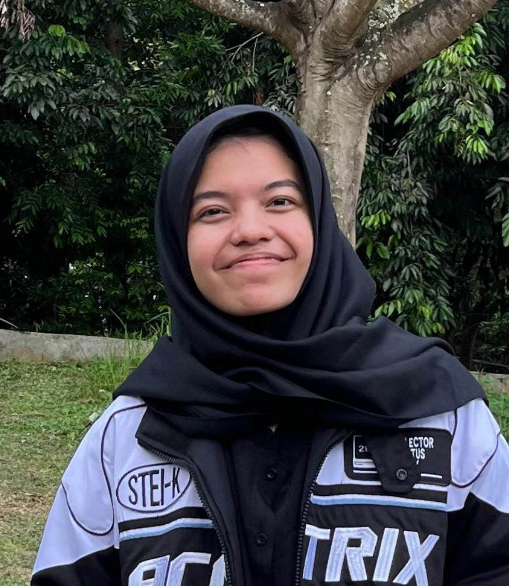

Sedikit Tentangku
Halo, aku Muthia Ariesta Anggraeni, dari STEI-K ITB, dan aku asli Bekasi. Orang-orang bilang aku kelihatan tenang, padahal aslinya sih... receh banget. Kadang suka nyeletuk di waktu yang nggak pas, tapi anehnya justru itu yang bikin suasana cair.
Aku tipe orang yang nggak suka ribet. Kalau ada masalah, prinsipku cuma satu: yaudah, nanti juga beres. Kadang emang bener, kadang malah nambah ribet, tapi setidaknya hidupku nggak terlalu tegang. Aku juga gampang overthinking, tapi di sisi lain pelupa parah — jadi kalau lagi stres hari ini, kemungkinan besar besok udah lupa kenapa.
Hal yang mungkin nggak banyak orang sangka: aku suka banget nonton bola. Kadang sampai nggak bisa fokus belajar kalau tim favoritku lagi main, padahal ujian udah di depan mata. Tapi ya gimana, serunya beda.
Aku nggak terlalu suka ninggiin ekspektasi. Buatku, hidup itu lebih enak dijalani dengan santai, tanpa harus jadi versi orang lain. Aku nggak pengen keliatan keren — aku cuma pengen jadi diriku sendiri, yang mungkin kadang ngelucu di waktu salah, tapi selalu tulus dan apa adanya.
Titipan Pesan
Seberapa jauh dari sini
Tembok-tembok ini tak berarti
Asal kulihat senyummu hari ini
Mendengar keluhmu malam nanti
Saat semua tak jelas arahnya
Kita hanya punya bersama
Lewati curam terjalnya dunia
Ramai sepi ini milik bersama
Ramai sepi ini milik bersama
Kita sama-sama takkan ke mana
Selama kau ada aku tak apa
Apa pun yang terjadi tidak apa
Melihat tawa tangis dan isak
Mendengar kabar berbagai macamnya
Kali ini kita belajar banyak
Yang runtuh kita ulangi nantinya
Saat semua tak jelas arahnya
Kita hanya punya bersama
Lewati curam terjalnya dunia
Ramai sepi ini milik bersama
Saat terasa berat-beratnya
Kutahu kau pun berjuang juga
Hadapi semuanya langsung di muka
Apa pun yang terjadi tidak apa
Setiap hari ku bersyukur
Melihatmu
Berselimut harapan
Berbekal cerita
Saat semua tak jelas arahnya
Kita hanya punya bersama
Lewati curam terjalnya dunia
Ramai sepi ini milik bersama
Ramai sepi ini milik bersama
Kita sama-sama takkan ke mana
Selama kau ada aku tak apa
Apa pun yang terjadi tidak apa
Kadang aku masih teringat hari-hari SMA, ketika langkah kita selalu bersisian, saling tertawa dan jatuh bersama. Setiap tantangan terasa lebih ringan karena ada cerita yang sama-sama kita tulis — cerita yang kadang konyol, kadang berat, tapi selalu terasa nyata. Lewati curam terjalnya dunia, lirik itu rasanya seperti menggambarkan kita: walau jalan kadang sulit, kita tetap berjalan bersama, walau kini jalannya tak selalu sama.
Sekarang, saat langkah baru mulai di kampus, aku berharap semangat itu tetap ada. Bahwa perjalanan baru ini bisa punya ruang "ramai sepi" yang sama — dimana kita bisa saling mengingat, saling menopang, dan tetap punya cerita yang membuat semuanya tak terasa sendiri. Saat terasa berat-beratnya, kutahu kau pun berjuang juga — dan itu memberi keyakinan bahwa di setiap kesepian atau kebingungan, selalu ada yang memahami, meski bentuknya berubah.
Lagu ini menjadi semacam pengingat: bahwa apapun yang terjadi, tawa, tangis, kegagalan, atau keberhasilan, semuanya bagian dari perjalanan. Dan yang terpenting, setiap langkah yang diambil bersama kenangan-kenangan lama, selalu membawa kita ke arah yang lebih hangat, lebih manusiawi, dan lebih berarti.
Ramai sepi ini milik bersama — itulah yang aku harap tetap hidup, baik di masa SMA yang penuh kenangan, maupun di langkah-langkah baru yang akan datang. Karena selama ada jejak-jejak itu, selama ada cerita yang dibagi, aku merasa tak apa menghadapi dunia, apa pun yang terjadi.
Masih Nyari Arah
Sebenernya, kalau flashback dikit, dari zaman SMP aku udah keukeuh pengen kuliah di Bandung. Nggak tau kenapa, ada aja daya tariknya — suasananya, lingkungannya, pokoknya nempel di kepala. Apalagi dulu sering liat project coding orang di sosmed, dari situ mulai muncul rasa penasaran sama dunia teknologi dan akhirnya nargetin STEI-K.
Lucunya, pas kelas 12 justru sempat kepikiran pindah haluan ke jurusan lain. Tapi setelah mikir panjang dan diskusi sama guru, aku balik lagi ke keputusan awal. Ya gimana, katanya first love never dies, kan? Hehe. Waktu pengumuman SNBP keluar pun aku malah nggak berani buka web-nya. Deg-degan banget. Akhirnya malah guru les yang ngabarin duluan kalau hasilnya biru — dan aku masih nggak percaya sampai dikirimin buktinya. Rasanya campur aduk: kaget, seneng, tapi juga nggak nyangka karena jujur aja waktu itu aku nggak berekspektasi tinggi.
Sekarang, di semester 3, rasanya mulai bener-bener menikmati semuanya. Walaupun materinya makin susah dan tugas makin numpuk, tapi aku justru makin suka prosesnya. Aku suka belajar hal yang ribet (asal bukan pas ujian). Aneh memang — aku bisa enjoy ngulik konsep yang rumit, tapi tetep males kalau disuruh ngafal rumus buat nilai.
Belakangan ini, karena sering ikut kegiatan dan lomba, hidup agak chaos. Jadwal berantakan, jam tidur hancur, dan yang paling mengejutkan: aku jadi rutin minum kopi dua kali sehari. Dulu nyium aromanya aja ogah, sekarang malah kayak temen seperjuangan biar nggak ketiduran depan laptop.
Tapi jujur, aku bersyukur banget. Di tengah kekacauan itu, aku ngerasa lebih ngerti arah hidupku. Aku belajar buat nggak ngebandingin diri sama orang lain. Orang-orang punya prestasinya masing-masing, dan aku juga punya jalanku sendiri, walaupun mungkin lebih pelan. Aku nggak mau jadi bayangan siapa pun — cukup jadi Muthia yang santai, yang masih sering ketawa di tengah stress, tapi tetap terus jalan pelan-pelan ke arah yang aku mau.
Jejak
Setelah ngerjain asesmen VIA, Piagam Diri, dan Identitas Naratif, aku jadi lebih sadar kalau diriku nggak cuma sekadar "mahasiswi yang sering ngopi dua kali sehari biar nggak ngantuk". Ternyata, di balik kebiasaan receh dan overthinking-ku, ada pola unik yang bikin aku... ya, aku. Dan dari semua refleksi itu, beginilah bentuk SHAPE versiku:
S — StrengthsKekuatan |
Dari hasil asesmen VIA, kekuatan utamaku ada di curiosity (rasa ingin tahu), humor, dan kindness. Aku suka banget ngulik hal baru — entah soal teknologi, ide random, atau bahkan hal-hal yang nggak ada hubungannya sama kuliah. Kadang karena terlalu penasaran, aku bisa buka 10 tab YouTube cuma buat cari tahu "kenapa kipas laptop bunyinya kayak pesawat." Selain itu, aku punya kemampuan buat bikin suasana lebih ringan. Aku sering ngelucu di tengah situasi tegang, dan entah kenapa itu sering berhasil bikin orang nyaman. Kelembutan dan rasa peduliku juga muncul tanpa harus diumumin. Aku suka bantu orang dengan cara sederhana, kayak dengerin, nyemangatin, atau sekadar ngajak bercanda biar mereka nggak stres sendirian. |
H — HeartMinat dan Kepedulian |
Hatiku cenderung condong ke hal-hal yang berhubungan dengan orang lain dan proses belajar. Aku senang ngeliat orang berkembang — bukan cuma dalam arti akademik, tapi juga dalam hal kecil, kayak temen yang mulai pede ngomong di depan kelas. Aku juga punya ketertarikan kuat di dunia teknologi yang nyambung sama sisi humanis. Buatku, teknologi nggak cuma tentang kode dan mesin, tapi tentang gimana itu bisa bantu hidup manusia jadi lebih baik (dan lebih lucu, kalau bisa). |
A — AptitudesBakat dan Kemampuan |
Aku sadar kalau aku nggak jenius dalam satu hal spesifik, tapi aku punya kemampuan buat beradaptasi cepat dan berpikir kreatif. Aku nggak gampang panik di situasi baru — ya, mungkin panik dikit, tapi masih bisa bercanda di tengahnya. Aku bisa belajar hal baru dengan cara nyemplung langsung. Selain itu, aku juga punya kemampuan komunikasi yang natural — mungkin karena terbiasa ngobrol santai tapi tetap nyambung ke inti masalah. |
P — PersonalityKepribadian |
Kalau dilihat dari Piagam Diri dan Identitas Naratif, aku termasuk orang yang realistis tapi santai. Aku nggak suka ngoyo jadi yang paling hebat, tapi juga nggak betah diam terlalu lama. Aku tipe "let it flow" tapi tetap punya arah. Aku bisa dibilang overthinker yang sudah berdamai dengan pikirannya sendiri — kadang mikir terlalu jauh, tapi juga bisa ngakak sendiri lima menit kemudian. Aku suka jadi diri sendiri tanpa terlalu mikirin impresi orang lain, karena aku percaya keaslian itu lebih penting daripada pencitraan. |
E — ExperiencePengalaman Hidup |
Pengalaman paling berharga buatku datang dari masa-masa penuh ketidakpastian. Mulai dari perjuangan masuk ITB lewat SNBP yang penuh deg-degan, sampai hari-hari di semester 3 yang chaos tapi seru. Aku pernah gagal, pernah bingung, tapi juga pernah bangga karena bisa bangkit lagi. Belakangan ini, ikut lomba dan sibuk di kegiatan akademik bikin aku sadar kalau setiap fase punya pelajarannya sendiri — bahkan dari hal konyol kayak akhirnya kecanduan kopi. Semua pengalaman itu bikin aku lebih sabar dan ngerti bahwa hidup nggak harus buru-buru. |
Kesimpulan
Kalau disimpulin, bentuk SHAPE-ku adalah perpaduan antara rasa ingin tahu yang besar, hati yang ringan tapi tulus, dan cara pandang hidup yang santai tapi tetap reflektif.
Aku belajar bahwa diriku bukan seseorang yang harus selalu produktif, tapi seseorang yang terus berkembang — sambil tetap bisa ketawa di tengah ribetnya hidup.
Dan mungkin, itu justru kekuatan terbesarku.
Ulasan
Setelah menyelesaikan semua tugas UTS dalam portfolio ini, aku mencoba menilai karya-karyaku sendiri secara objektif. Berikut adalah refleksi dan penilaian diri atas setiap komponen yang telah kukerjakan:
UTS 1: All About Me
Kriteria |
Skor |
Deskripsi |
| Orisinalitas | 5 | Perspektif penemuan diri yang sangat unik dan segar dengan gaya bercerita yang apa adanya dan tanpa pretensi, menampilkan kepribadian yang autentik. |
| Keterlibatan | 5 | Memikat dari awal hingga akhir dengan gaya bercerita yang ringan namun mendalam, humor natural yang membuat pembaca merasa terhubung. |
| Humor | 5 | Humor yang sangat natural dan mengalir dengan sempurna, tidak dipaksakan dan menjadi bagian integral dari kepribadian yang ditampilkan. |
| Wawasan | 4 | Memberikan wawasan mendalam tentang kepribadian diri dengan refleksi yang jujur tentang kelebihan dan kebiasaan personal. |
Rata-rata: 4.75
UTS 2: My Songs For You
Kriteria |
Skor |
Deskripsi |
| Orisinalitas | 5 | Perspektif yang sangat unik dalam menghubungkan lirik lagu dengan kenangan persahabatan, personal dan segar dalam penyampaian makna "ramai sepi". |
| Keterlibatan | 5 | Memikat dengan koneksi emosional yang sangat kuat antara lagu dan kenangan, berhasil membawa pembaca merasakan kehangatan persahabatan. |
| Humor | 4 | Walau lebih reflektif dan emosional, tetap ada sentuhan ringan dan kehangatan dalam cara penyampaian yang membuat pembaca nyaman. |
| Inspirasi | 5 | Sangat menginspirasi dengan pesan tentang nilai persahabatan yang bertahan walau jarak dan waktu memisahkan, dampak emosional sangat kuat. |
Rata-rata: 4.75
UTS 3: My Stories For You
Kriteria |
Skor |
Deskripsi |
| Orisinalitas | 5 | Perspektif perjalanan kuliah yang sangat personal dengan sentuhan humor dan kejujuran yang menyegarkan, menampilkan sudut pandang unik tentang proses penemuan diri. |
| Keterlibatan | 5 | Alur cerita sangat memikat dari awal hingga akhir, pembaca dibawa mengikuti perjalanan dari SMP hingga semester 3 dengan momen-momen yang sangat relatable. |
| Pengembangan Narasi | 5 | Narasi berkembang dengan sangat baik, menunjukkan transformasi dan perjalanan yang jelas dengan detail yang memperkaya cerita. |
| Inspirasi | 5 | Sangat menginspirasi dengan pesan kuat tentang menerima diri sendiri, tidak membandingkan dengan orang lain, dan menjalani hidup dengan santai namun tetap bermakna. |
Rata-rata: 5.00
UTS 4: My SHAPE
Kriteria |
Skor |
Deskripsi |
| Orisinalitas | 4 | Cara merefleksikan SHAPE dengan gaya personal yang santai dan jujur cukup unik, walau framework SHAPE sendiri adalah kerangka umum. |
| Keterlibatan | 4 | Format tabel memudahkan pembacaan dan setiap bagian terasa personal, ada beberapa momen yang menarik dan relatable. |
| Keautentikan | 5 | Sangat jujur dan autentik dalam mengungkap kekuatan, kelemahan, dan kepribadian diri tanpa berusaha terlihat sempurna. |
| Inspirasi | 4 | Cukup menginspirasi dengan pesan tentang menerima diri apa adanya dan terus berkembang tanpa harus selalu produktif. |
Rata-rata: 4.25
Refleksi Akhir: Secara keseluruhan, aku merasa karya-karyaku mencerminkan diriku yang apa adanya — autentik, jujur, dan penuh dengan momen-momen personal yang bermakna. Setiap tulisan adalah bagian dari perjalanan mengenal diri sendiri, dan aku bangga bisa menuangkannya dengan cara yang tulus tanpa berusaha menjadi sempurna. Keaslian adalah kekuatan terbesar dalam setiap karya ini.